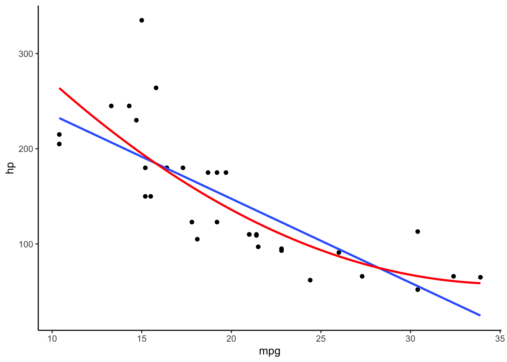
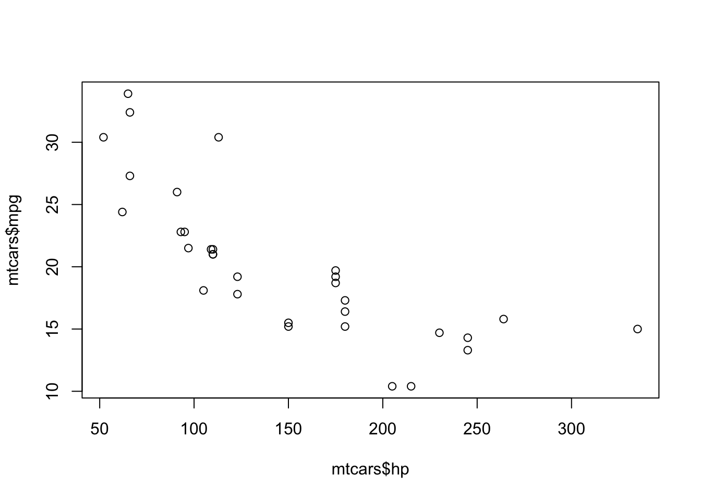
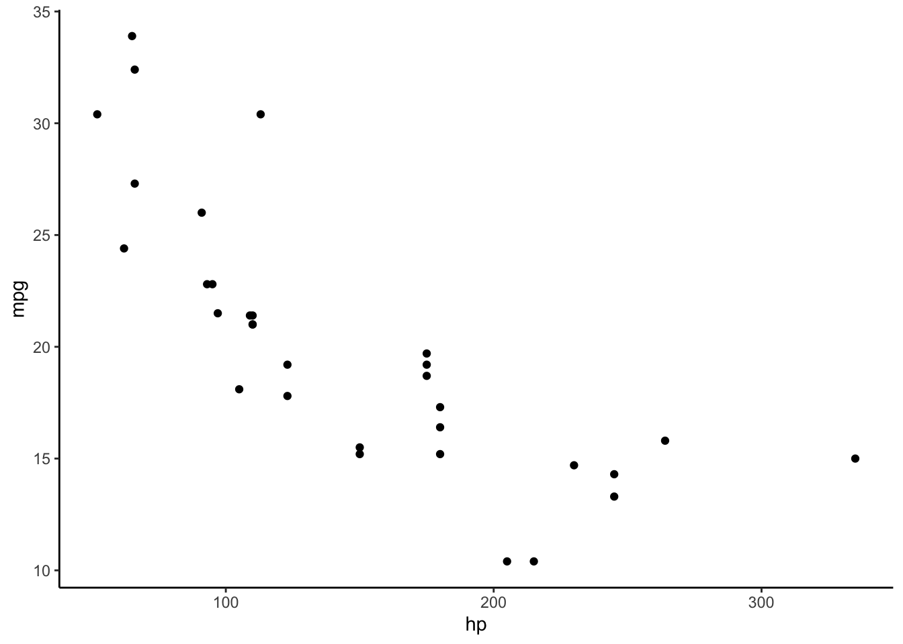

Lab 09: Correlation
Mar 22, 2022
library(ggplot2)Pearson’s Correlation Coefficient
ค่าสัมประสิทธิ์สหสัมพันธ์ของเพียร์สัน (Pearson’s correlation coefficient) หรือค่า Pearson’s r เป็นค่าความแปรปรวนร่วมมาตรฐาน (standardized covariance) ซึ่งบอกทั้งทิศทางและขนาดของความสัมพันธ์เชิงเส้นตรงระหว่างสองตัวแปร
\[ r = \frac{cov_{xy}}{s_x s_y}\]
ค่า r นั้นอยู่ระหว่าง -1 ถึง 1 โดยที่ -1 แสดงถึงความสัมพันธ์ทางลบแบบสมบูรณ์ 0 แสดงว่าตัวแปรทั้งสองไม่สัมพันธ์กัน และ +1 แสดงว่าตัวแปรสัมพันธ์กันทางบวกอย่างสมบูรณ์
ในแบบฝึกหัดนี้เราจะใช้ชุดข้อมูลที่มีอยู่แล้วใน R ที่ชื่อว่า mtcars
data(mtcars) # Load mtcars into a data frame.
head(mtcars)## mpg cyl disp hp drat wt qsec vs am gear carb
## Mazda RX4 21.0 6 160 110 3.90 2.620 16.46 0 1 4 4
## Mazda RX4 Wag 21.0 6 160 110 3.90 2.875 17.02 0 1 4 4
## Datsun 710 22.8 4 108 93 3.85 2.320 18.61 1 1 4 1
## Hornet 4 Drive 21.4 6 258 110 3.08 3.215 19.44 1 0 3 1
## Hornet Sportabout 18.7 8 360 175 3.15 3.440 17.02 0 0 3 2
## Valiant 18.1 6 225 105 2.76 3.460 20.22 1 0 3 1ข้อมูล mtcars เป็นข้อมูลของรถยนต์แต่ละยี่ห้อ เช่น อัตราสิ้นเปลือง ประเภทเกียร์ ขนาดกระบอกสูบ ฯลฯ เราสามารถดูรายละเอียดใน help ได้ด้วย ?mtcars
การคำนวณค่า r ด้วยมือ
เราจะลองหาความสัมพันธ์ระหว่างอัตราการสิ้นเปลืองน้ำมัน (จำนวนไมล์ต่อแกลลอน; miles per gallon; mpg) และแรงม้า (horse power; hp)
เราสามารถตั้งสมมติฐานได้ว่า รถที่มีแรงม้าสูง ๆ น่าจะสิ้นเปลืองน้ำมัน นั่นคือวิ่งได้ระยะทางน้อยลงต่อหน่วยเชื้อเพลิง ส่วนรถที่มีแรงม้าน้อย ๆ คือพวกรถขนาดเล็กที่จะวิ่งได้ระยะทางไกลกว่า เราจึงเชื่อว่า mpg และ hp จะมีความสัมพันธ์กันทางลบ
plot(mtcars$mpg, mtcars$hp)
เริ่มต้นด้วยการหาค่า \(cov_{xy}\). \[cov_{xy} = \frac{\sum{(X - \bar{X})(Y - \bar{Y})}}{N - 1}\]
covxy <- (sum((mtcars$mpg - mean(mtcars$mpg)) * (mtcars$hp - mean(mtcars$hp)))) / (nrow(mtcars) -1)
covxy## [1] -320.7321# Or use cov() function
cov(mtcars$mpg, mtcars$hp)## [1] -320.7321จากนั้นนำ \(cov_{xy}\) ไปหารด้วย \(s_x s_y\)
covxy / (sd(mtcars$mpg) * sd(mtcars$hp))## [1] -0.7761684คำสั่ง cor() และ cor.test()
คำสั่งของ base R cor() ใช้คำนวณค่า r
cor(mtcars$mpg, mtcars$hp)## [1] -0.7761684แต่คำสั่ง cor() นั้นไม่ได้มีการทดสอบนัยสำคัญทางสถิติให้ หากเราต้องการรู้ค่า p-value และ CI เราต้องใช้คำสั่ง cor.test().
cor.test(mtcars$mpg, mtcars$hp)##
## Pearson's product-moment correlation
##
## data: mtcars$mpg and mtcars$hp
## t = -6.7424, df = 30, p-value = 1.788e-07
## alternative hypothesis: true correlation is not equal to 0
## 95 percent confidence interval:
## -0.8852686 -0.5860994
## sample estimates:
## cor
## -0.7761684Output ของ cor.test() จะมีค่าสหสัมพันธ์ (sample estimates: cor), ค่า 95% CI ของสถิติ r (หากมีนัยสำคัญจะต้องไม่ครอบคลุมเลข 0), ค่าทดสอบสถิติ t (เพื่อทดสอบว่า r แตกต่างจาก 0 อย่างมีนัยสำคัญทางสถิติหรือไม่), ค่า df = N - 2, และค่า p-value ของการทดสอบ (น้อยกว่า .05 หรือไม่)
โดยค่าตั้งต้น การทดสอบ cor.test() จะเป็นการทดสอบสองหาง (คือทั้งมากกว่าและน้อยกว่า 0) แต่เราสามารถเลือกเป็นการทดสอบหางเดียวได้หากเราต้องการทดสอบทางเดียว เช่น มีความสัมพันธ์ทางลบหรือไม่ \(H_0: r < 0\)
option alternative = c("two.sided", "less", "greater")
cor.test(mtcars$mpg, mtcars$hp, alternative = "less")##
## Pearson's product-moment correlation
##
## data: mtcars$mpg and mtcars$hp
## t = -6.7424, df = 30, p-value = 8.939e-08
## alternative hypothesis: true correlation is less than 0
## 95 percent confidence interval:
## -1.0000000 -0.6231988
## sample estimates:
## cor
## -0.7761684ค่าสหสัมพันธ์ประเภทอื่น ๆ
คำสั่ง cor() และ cor.test() ใน base R ยังสามารถคำนวณค่าสหสัมพันธ์ประเภทอื่น ๆ ได้ ด้วยการระบุ method = "pearson", "kendall" , หรือ "spearman"
- ค่าสหสัมพันธ์ของเพียร์สัน (r) เหมาะกับการทดสอบความสัมพันธ์เชิงเส้นตรงระหว่างตัวแปรต่อเนื่องสองตัว แม้ว่าการทดสอบค่า r จะมีข้อสมมุติพื้นฐานเรื่องการกระจายตัวเป็นปกติ แต่การทดสอบก็มีความแกร่ง (robust) ต่อข้อมูลที่ไม่ได้เป็นปกติ อย่างไรก็ตามค่า r นั้นอ่อนไหวต่อค่าสุดโต่ง (outliers)
- ค่าสหสัมพันธ์แบบ Spearman’s rank หรือค่า Spearman’s rho (\(\rho\)) เป็นการทดสอบความเชื่อมโยง (association) แบบไร้พารามิเตอร์สำหรับข้อมูลแบบจัดอันดับ (ranked data หรือ ordinal data) สถิตินี้เหมาะสมกับความสัมพันธ์แบบ monotonic (ความความสัมพันธ์มีทิศทางเดียว) ทั้งแบบเส้นตรงและไม่เป็นเส้นตรง ค่า rho นี้อ่อนไหวต่อค่าสุดโต่งน้อยกว่า r
- ค่าสหสัมพันธ์แบบ Kendall’s rank หรือค่า Kendall’s tau (\(\tau\)) เป็นการทดสอบความไม่เป็นอิสระ (dependence) แบบไร้พารามิเตอร์สำหรับตัวแปรแบบ ค่า Kendall’s tau มักจะมีค่าต่ำกว่า Spearman’s rho แต่ค่า tau นั้นไม่ค่อยอ่อนไหวต่อความคลาดเคลื่อนและแม่นยำกว่าในกลุ่มตัวอย่างขนาดเล็ก จึงเป็นสถิติที่แนะนำให้ใช้มากกว่า Spearman’s rho
เราลองมาดู plot ระหว่าง mpg และ hp

เส้นสีฟ้าเป็นโมเดลเชิงเส้นตรงระหว่างทั้งสองตัวแปร ส่วนเส้นสีแดงเป็นโมเดลเส้นโค้ง
เห็นได้ว่าความสัมพันธ์ระหว่างตัวแปรเป็น monotonic ในทางลบ (คือเมื่อตัวแปรหนึ่งเพิ่มขึ้น อีกตัวหนึ่งลดลง) แต่ดูไม่ค่อยจะเป็นเส้นตรงนัก
cor.test(mtcars$mpg, mtcars$hp, method = "pearson")##
## Pearson's product-moment correlation
##
## data: mtcars$mpg and mtcars$hp
## t = -6.7424, df = 30, p-value = 1.788e-07
## alternative hypothesis: true correlation is not equal to 0
## 95 percent confidence interval:
## -0.8852686 -0.5860994
## sample estimates:
## cor
## -0.7761684cor.test(mtcars$mpg, mtcars$hp, method = "spearman")## Warning in cor.test.default(mtcars$mpg, mtcars$hp, method = "spearman"): Cannot compute exact p-value with ties##
## Spearman's rank correlation rho
##
## data: mtcars$mpg and mtcars$hp
## S = 10337, p-value = 5.086e-12
## alternative hypothesis: true rho is not equal to 0
## sample estimates:
## rho
## -0.8946646cor.test(mtcars$mpg, mtcars$hp, method = "kendall")## Warning in cor.test.default(mtcars$mpg, mtcars$hp, method = "kendall"): Cannot compute exact p-value with ties##
## Kendall's rank correlation tau
##
## data: mtcars$mpg and mtcars$hp
## z = -5.871, p-value = 4.332e-09
## alternative hypothesis: true tau is not equal to 0
## sample estimates:
## tau
## -0.7428125เนื่องจากความสัมพันธ์นั้นไม่ค่อยเป็นเส้นตรง ค่า Spearman’s rho จึงสูงกว่าค่า Pearson’ r แสดงให้เห็นว่าโมเดลเส้นโค้งเหมาะสมกับข้อมูลมากกว่า ส่วนค่า Kendall’s \(\tau\) แม้จะดูน้อยกว่า แต่เป็นเพราะวิธีการคำนวณ หากเราเปรียบเทียบที่ค่า p-value จะเห็นว่าค่า Kendall’s \(\tau\) มีค่า p น้อยกว่าค่า Pearson’s r
ข้อสมมติพื้นฐานเรื่องความเป็นเส้นตรง (linearity) และค่าสุดโต่ง (outlier) เป็นข้อที่ควรระวังอย่างยิ่งสำหรับการใช้ Pearson’s r หากข้อสมมติดังกล่าวไม่เป็นจริง เราควรต้องเลือกสถิติอื่นที่เหมาะสมแทน (เช่น rank correlation) หรือแปลงข้อมูล (data transformation) ก่อนที่จะเลือกใช้สมการเส้นต้น
ดังนั้นการทำข้อมูลให้เป็นภาพ (visualization) จะช่วยให้เราเลือกสถิติได้เหมาะสมกับข้อมูลยิ่งขึ้น
Scatter Plot
การวิเคราะห์ความสัมพันธ์ระหว่างตัวแปรสองตัวจะนิยมใช้ scatter plot
การ plot ใน R นั้นนิยมใช้คำสั่งใน base R หรือ คำสั่งจากแพ็คเกจ ggplot2
Base R
คำสั่ง plot(x,y) ใน R จะตรวจสอบว่าตัวแปร x, y นั้นเป็นตัวแปรประเภทใด หากเป็นตัวแปรต่อเนื่องทั้งคู่ก็จะสร้าง scatter plot ให้
# Base R: Scatter plot
plot(mtcars$hp, mtcars$mpg)
ggplot2
แพ็คเกจ ggplot2 เป็นที่นิยมอย่างมากในการสร้างกราฟบน R อย่างไรก็ดีแพ็คเกจนี้ใช้แนวคิด Grammar of Graphics ในการเขียน การสร้างกราฟจะต้องมี 3 องค์ประกอบหลัก คือ data, coordinate system, และ geoms (geometry หรือลักษณะภาพเพื่อแสดงข้อมูล)
เช่น หากเราต้องการสร้าง scatter plot เราจะใช้คำสั่ง ggplot(data, mapping = aes(x, y) ) + geom_point() ซึ่งมีความหมายดังนี้
dataคือ data.frame ที่เราต้องการใช้วิเคราะห์ เช่นmtcarsmapping = aes()กำหนด aesthetics ของ plot นั่นคือ ตัวแปรใดจะอยู่บนแกนไหน (mapping) ใน plot นี้เราจะให้hpอยู่บนแกน x และmpgอยู่บนแกน y- หลังจากนั้นเราจะปิดวงเล็บคำสั่ง
ggplot()แต่คำสั่งนี้ยังไม่จบ เนื่องจากเรายังไม่ได้ระบุว่าต้องการใช้พล็อตหน้าตาเป็นอย่างไร เราจะเพิ่มคำสั่ง geometry เข้าไปด้วยเครื่องหมาย (+) สำหรับข้อมูลที่เป็นจุด ๆ ใน scatter plot เราใช้คำสั่งgeom_point(). - (เสริม) เราสามารถเพิ่มลักษณะอื่น เข้าไปในกราฟได้อีก เช่น
+คำสั่งtheme_classic()เพื่อให้กราฟหน้าตาค่อนข้างเป็น APA-styled
ถึงแม้ว่าคำสั่งของ ggplot2 จะยาวและใช้ยากกว่าสำหรับ scatter plot ง่าย ๆ แต่ในอนาคตเราจะได้เห็นว่า ggplot2 นั้นจะช่วยให้เราสร้างกราฟที่มีความซับซ้อนได้ง่ายขึ้นอย่างมาก (เช่น กราฟที่มีเส้น fitted line แบบด้านบน)
# GGplot
library(ggplot2)
ggplot(mtcars, mapping = aes(x = hp, y = mpg)) + #define data and mapping aesthetics
geom_point() + #point geometry for scatter plot
theme_classic()
# We can save the plot as a variable for later use (output will not be shown)
p <- ggplot(mtcars, mapping = aes(x = hp, y = mpg)) +
geom_point() +
theme_classic()Correlation Matrix
เราสามารถดูความสัมพันธ์ระหว่างตัวแปรหลาย ๆ คู่พร้อมกัน โดยสร้างเป็นตารางสหสัมพันธ์ (correlation matrix)
Base R
สมมติว่าเราต้องการดูความสัมพันธ์รายคู่ระหว่าง mpg, cyl, disp, hp, และ wt
# Crate a data frame with variables to be analyzed.
corr_dat <- mtcars[, c("mpg", "cyl", "disp", "hp", "wt")]
# run correlation
cor(corr_dat)## mpg cyl disp hp wt
## mpg 1.0000000 -0.8521620 -0.8475514 -0.7761684 -0.8676594
## cyl -0.8521620 1.0000000 0.9020329 0.8324475 0.7824958
## disp -0.8475514 0.9020329 1.0000000 0.7909486 0.8879799
## hp -0.7761684 0.8324475 0.7909486 1.0000000 0.6587479
## wt -0.8676594 0.7824958 0.8879799 0.6587479 1.0000000ตารางสหสัมพันธ์จะมีชื่อตัวแปรทั้งแนวตั้งและแนวนอน ค่าในแต่ละช่อง คือ ค่า r ระหว่างคู่ตัวแปร ดังนั้นเส้นแทยงลงจึงมีค่าเป็น 1 (ตัวแปรแต่ละตัวสัมพันธ์อย่างสมบูรณ์กับตัวมันเอง) และค่าที่อยู่เหนือเส้นแทยงเป็นภาพสะท้อน (mirror image) ของค่าที่อยู่ใต้เส้นแทยง
อย่างไรก็ดี คำสั่ง cor() นั้นไม่มีการทดสอบนัยสำคัญทางสถิติให้ เราจะลองดูแพ็คเกจอื่นที่ช่วยวิเคราะห์ตารางสหสัมพันธ์
psych package
แพ็คเกจ psych มีคำสั่งที่ชื่อว่า corr.test() (สังเกตว่ามี r 2 ตัว) คำสั่งนี้ใช้จะคำนวณค่า Pearson’s r เป็นค่าตั้งต้น หากต้องการคำนวณค่าสหสัมพันธ์ตัวอื่นก็สามารถเปลี่ยน option method = ได้เหมือนกับคำสั่งใน base R
Output จะเป็นตารางค่า r และตารางค่า p
library("psych")
psych::corr.test(corr_dat) # Actually, you do not need to include "psych::" before "corr.test". However, it is a good practice to identify which package you are using.## Call:psych::corr.test(x = corr_dat)
## Correlation matrix
## mpg cyl disp hp wt
## mpg 1.00 -0.85 -0.85 -0.78 -0.87
## cyl -0.85 1.00 0.90 0.83 0.78
## disp -0.85 0.90 1.00 0.79 0.89
## hp -0.78 0.83 0.79 1.00 0.66
## wt -0.87 0.78 0.89 0.66 1.00
## Sample Size
## [1] 32
## Probability values (Entries above the diagonal are adjusted for multiple tests.)
## mpg cyl disp hp wt
## mpg 0 0 0 0 0
## cyl 0 0 0 0 0
## disp 0 0 0 0 0
## hp 0 0 0 0 0
## wt 0 0 0 0 0
##
## To see confidence intervals of the correlations, print with the short=FALSE optionเนื่องจากค่าเหนือเส้นแทยงและใต้เส้นแทยงเป็นค่าเดียวกัน เราจึงดูเฉพาะครึ่งบนหรือครึ่งล่างของตารางได้ โดยใช้คำสั่ง lowerCor() เพื่อดูเฉพาะครึ่งล่างของตาราง
psych::lowerCor(corr_dat) # Show only lower half.## mpg cyl disp hp wt
## mpg 1.00
## cyl -0.85 1.00
## disp -0.85 0.90 1.00
## hp -0.78 0.83 0.79 1.00
## wt -0.87 0.78 0.89 0.66 1.00apaTables package
แพ็คเกจ apaTables ช่วยสร้างตารางสหสัมพันธ์แบบ APA ที่สวยงามให้และบันทึกเป็นไฟล์ Word (.doc) เพื่อให้เอาไปใช้เขียนรายได้ต่อได้โดยง่าย apaTables
การบันทึกผลตารางใช้ option filename = "your_file_name.doc" โดยไฟล์จะถูกบันทึกใน working directory
คำสั่งเพื่อสร้างตารางในแพ็คเกจนี้คือ apa.cor.table(data, filename = " ").
# install.packages("apaTables")
# run getwd() to check your working directory.
library(apaTables)
apa.cor.table(corr_dat, filename = "APA_Corr_Table.doc") ##
##
## Means, standard deviations, and correlations with confidence intervals
##
##
## Variable M SD 1 2 3 4
## 1. mpg 20.09 6.03
##
## 2. cyl 6.19 1.79 -.85**
## [-.93, -.72]
##
## 3. disp 230.72 123.94 -.85** .90**
## [-.92, -.71] [.81, .95]
##
## 4. hp 146.69 68.56 -.78** .83** .79**
## [-.89, -.59] [.68, .92] [.61, .89]
##
## 5. wt 3.22 0.98 -.87** .78** .89** .66**
## [-.93, -.74] [.60, .89] [.78, .94] [.40, .82]
##
##
## Note. M and SD are used to represent mean and standard deviation, respectively.
## Values in square brackets indicate the 95% confidence interval.
## The confidence interval is a plausible range of population correlations
## that could have caused the sample correlation (Cumming, 2014).
## * indicates p < .05. ** indicates p < .01.
## Visualizing Correlation Matrix
การทำภาพของตารางสหสัมพันธ์ช่วยให้เราสำรวจความสัมพันธ์ระหว่างคู่ตัวแปรได้พร้อม ๆ กัน โดยเฉพาะอย่างยิ่งการตรวจสอบการละเมิดข้อสมมติพื้นฐาน (assumption violation) ภาพเหล่านี้มักใช้เพื่อวินิจฉัยปัญหาของข้อมูลมากกว่าจะใช้เพื่อรายงานผลการวิจัย เราจึงไม่ค่อยได้เห็น plots เหล่านี้ในบทความวิจัยเท่าใดนัก
มีแพ็คเกจจำนวนมากสำหรับวิเคราะห์ภาพของสหสัมพันธ์ ในแบบฝึกหัดนี้เราจะพูดถึงแค่บางตัวเท่านั้น
Base R
คำสั่ง pairs(data) จะสร้างตารางของ scatter plot ตามคู่ตัวแปรในชุดข้อมูล data function will produce a matrix of scatter plots. You could examine whether assumptions of linearity and homoscedasticity hold true for any pairs.
pairs(corr_dat)
psych package
แพ็คเกจ psych มีคำสั่ง pairs.panels() ที่จะสร้างตารางค่าสหสัมพันธ์ในตารางครึ่งบน ตาราง scatter plot ในครึ่งล่าง และ histogram ของตัวแปรในแนวแทยง
ประเภทของค่าสหสัมพันธ์สามารถกำหนดได้ค่า option method = "pearson", "spearman", หรือ "kendall" เหมือนใน base R
The psych package’s pairs.panels function will give you correlation coefficients on an upper half, scatter plots on a lower half, and distribution density plots on a diagonal. The method option can be . The plots are useful for detecting assumption violations.
library(psych)
pairs.panels(corr_dat) # input is a data frame.
GGally
แพ็คเกจ GGally ใช้ฐานจาก ggplot2 แต่เพิ่มเติมความสามารถในการวิเคราะห์เข้ามาอีก เราจะใช้คำสั่ง ggpairs() และกำหนด option lower=list(continuous = "smooth_lm") เพื่อกำหนดให้สร้างเส้น fitted line แบบเส้นตรงใน scatter plot ด้านล่างตาราง
# install.packages("GGally")
library("GGally")
ggpairs(corr_dat, lower=list(continuous = "smooth_lm"))